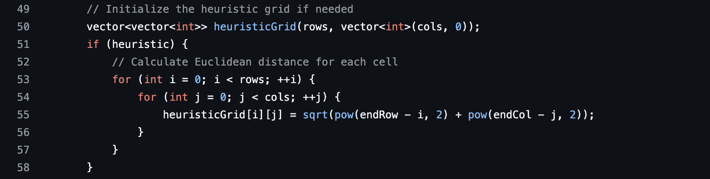
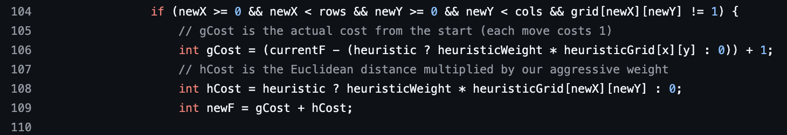

Pathfinding in C++ Github
Implementation of Dijkstra's & A* with C++ STL


Background
Dijkstra's Algorithm and A* are ubiquitous pathfinding algorithms for motion planning applications. Dijkstra's algorithm finds the shortest path from a source node to all other nodes in a weighted graph by exploring nodes in order of increasing cost, ensuring an optimal solution at the expense of search efficiency. A* operates similarly but incorporates an optimistic heuristic to priortize the search of nodes closest to the destination node. For this project, I decided to implement both algorithms with the C++ standard template library (STL) and render the results in a pygame window.
Implementation
The initialization and main loop of Dijkstra's and A* are shared. To initialize the graph being traversed (in motion planning this is usually some kind of grid-structure), each node is given a cost of infinity to signify that it is yet to be visited (this is done using numeric_limits<int>::max in the code). From the starting position, the node with the smallest cost is selected to be searched next. Furthermore, the cost of each node is stored in a min-priority queue (queue where the smallest element is always at the top), and the node from which this neighbor was searched is stored in an unordered map (this is used later for retracing our path). In the code, the former is called pq and the later is called prev (because it stores the previous node for each neighbor, often called a predecessor). Note: currently this is done with a vector of vectors in the code-- definitely want to switch this out later. This process is repeated until the priority queue is empty, with three main caveats:
- If we encounter a wall (in our code, walls have a label of 1 since empty space has one of 0), move on. We can't traverse a wall anyway. By skipping it, the cost will remain infinity and we won't waste time on it again.
- If we revisit a node at a later point, we check whether the new calculated cost is less than the old one. If so, we set the new (lesser) one as the node cost going forward and update the neighbor to the new one. This is critically important for finding the optimal path.
- Lastly, if we find the destination node we break out of this loop immediately (despite the priority queue not being empty). At this point we walk the path map in reverse "order". For example, if B is C's predecessor, and A is B's, we walk the map from C->B->A. By storing our search results in a min-priority queue, we can be certain that the set of predecessor's we get at the end is the minimum possible cost. Note: if this never happens, the min-priority queue will empty itself, and we'll have the min-cost predecessor for every node in the graph but unfortunately no path to the goal node. At that point we break out and say the goal node is inaccessible.
The difference between Dijkstra's and A* is how this cost is calculated. Dijkstra's simply does breadth-first search from the starting node, picking the neighbor node with the minimum distance at each time step. A* uses both the distance from the starting node and a distance heuristic w.r.t end node. In my implementation, the heuristic used is a weighted optimistic (assuming no walls) Euclidean distance. The higher the weight, the more aggressively proximity to the end node is favored (exploitation over exploration). I weight it very aggressively to make the visualization more clear, but this runs the risk of inadmissability, meaning suboptimal paths are possible. You can see this in the code below.
 Takeaways
- Using C++ Standard Template Library (STL). Aside from hammering down motion planning fundamentals, the main reason I took on this project was to get more experience with C++ STL, which it definitely accomplished. For the grid itself, storing costs, keeping track of whether we've visited a node, and storing predecessors I use a vector of vectors. For the minHeap I use the built in priority_queue class. Over time I want to continue using different classes (unordered_map for predecessors, arrays since grid size is fixed, etc) and compare performance.
- Dijkstra's and A* are much more similar than most people realize. Going into this project I already knew the difference between the two algorithms, however without having implemented them both from scratch I didn't realize just how similar they were. Once I realized that setting a heuristic to zero mimics Dijkstra's algorithm exactly, it was rewarding to do both algorithms with the same function. In the future, it would be cool to pass a heuristic function rather than a boolean as the input param to pathfinding() to allow for multiple variants of A* (Manhattan Distance, Chebyshev Distance, etc).